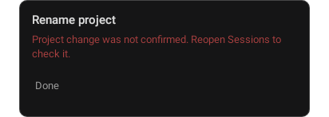
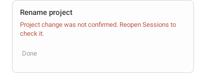

Bounded repair on base 6ea5842197dd9fe4b366d482b56f59b87d1213d4; uncommitted source identified by exact hashes and assertions. Production dialog driven through actual correlated RPC, repository and ViewModel with an offline wire. Native Rename / Save, positively observed mutation, then virtual RPC-local deadline. No retry or replay action; Done dismisses.
Robolectric SDK34 native modal decor draws, mono light and dark, phone 412×915dp. Not full Activity, installed device, IME, wide layout, enlarged text or live Gateway acceptance. The added uncertainty state follows Android's approved policy; no Desktop peer is fabricated. Unchanged original Desktop-paired menu report retains its own pins and provenance.

